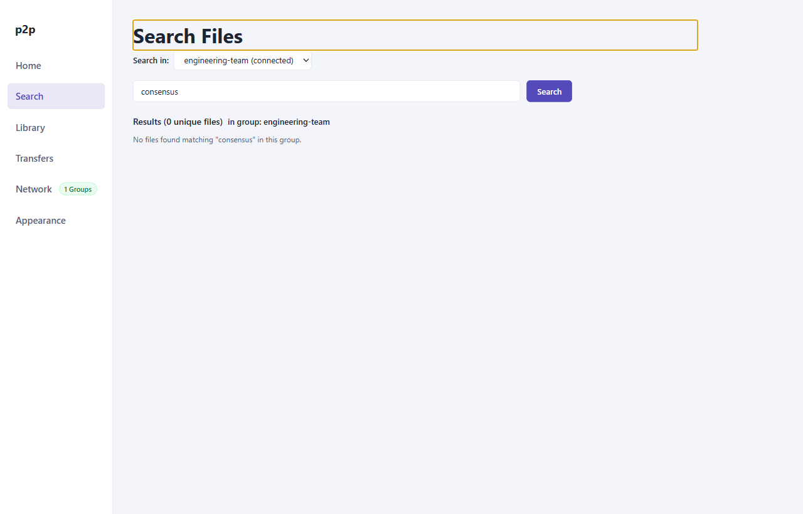

User Guide: Search & Discovery
The Search view allows peers to locate files distributed across the peer-to-peer overlay. By querying supernodes that maintain inverted index catalogs, search queries execute with low latency and without flooding the entire network.
1. Search Interface
The Search screen provides a scoped query interface with real-time result aggregation:

Key Components
- Group Selector Dropdown: Scopes the search operation to one specific joined group. Search queries are never broadcast across multiple groups simultaneously.
- Query Input Field: Accepts alphanumeric search strings.
- Search Button: Submits the query to the group's designated supernode.
- Results Table: Displays matching files, including file name, size, SHA-256 fingerprint, source peer count, and one-click download buttons.
2. Search Workflow
- Select Target Group: Choose the group you wish to search from the group dropdown menu. You must be in the
connectedstate within that group to issue queries. - Enter Search Query: Type words or terms describing the file you want to locate (e.g.,
spec,whitepaper,consensus). - Execute Query: Click Search or press Enter.
- Inspect Results: Results stream in asynchronously as supernodes return matching catalog records.
- Initiate Download: Click Download on any result row to begin transferring the file (see Transfers & Downloads).
3. Query Matching Semantics
The search engine implements deterministic, multi-term boolean matching:
Tokenization & Normalization
- Unicode NFKC Normalization: Inputs undergo canonical unicode normalization to handle accented characters and distinct glyph forms consistently.
- Case Folding: All tokens are folded to lowercase.
- Whitespace Splitting: Queries containing multiple space-separated words are split into individual tokens.
Boolean AND Semantics
For a file to match a multi-term query, all tokens in the query must match against either the file's name or its metadata attributes:
- Example: Searching
p2p specmatchesp2p-webrtc-rfc-spec.md. - Example: Searching
consensus papermatchescluster-consensus-raft-paper.pdf. - Non-matching terms will exclude the file from the result list.
4. Search Lifecycle States
The query lifecycle transitions through four distinct operational states:
| State | Indicator | Description |
|---|---|---|
idle |
idle | No active search query in progress. |
searching |
searching | Query has been dispatched to the primary supernode; awaiting index match responses. |
complete |
complete | Primary supernode successfully executed the index lookup and returned all matching entries. |
partial |
partial | Primary supernode disconnected or timed out mid-query; standby supernode was consulted to retrieve surviving records. |
Supernode Loss & Standby Recovery
If the primary supernode becomes unresponsive while a search is active:
- The client detects the heartbeat or connection loss.
- The query is automatically re-routed to the designated Standby Supernode.
- Results already accumulated are preserved, and newly discovered sources from the standby supernode are appended without duplicate entries.
5. Result Aggregation & Swarm Sources
When multiple peers in the same virtual group share identical files (verified by having matching SHA-256 digests):
- The search results table automatically collapses duplicates into a single logical row.
- The Sources column indicates the total number of distinct peer endpoints providing that file.
- When you initiate a download, the client automatically balances the download or selects the peer with the lowest latency route.